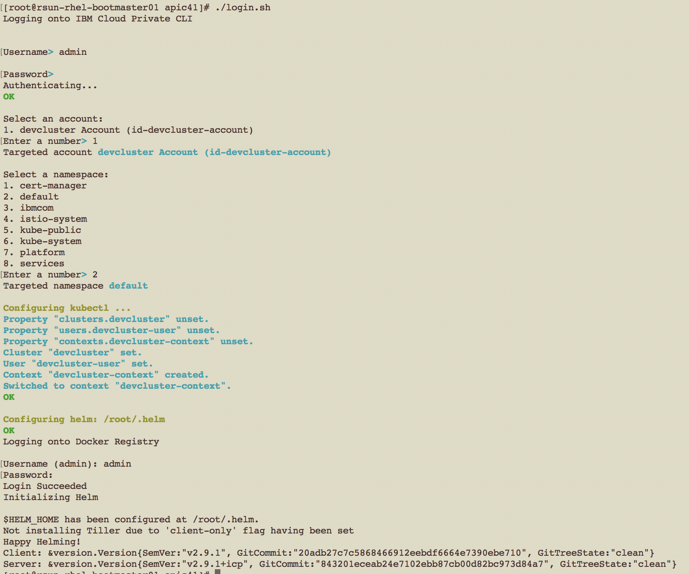
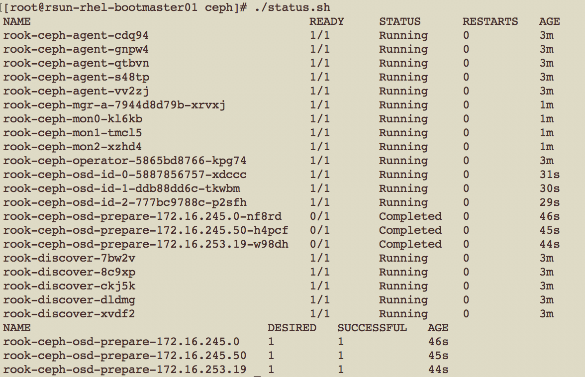

Install and configure Ceph for IBM Cloud Private
Ceph is open source software designed to provide highly scalable object, block and file-based storage under a unified system.
Ceph provides a POSIX-compliant network file system (CephFS) that aims for high performance, large data storage, and maximum compatibility with legacy applications.
Rook is an open source orchestrator for distributed storage systems running in cloud native environments.
Rook turns storage software into self-managing, self-scaling, and self-healing storage services. It does this by automating deployment, bootstrapping, configuration, provisioning, scaling, upgrading, migration, disaster recovery, monitoring, and resource management. Rook uses the facilities provided by the underlying cloud-native container management, scheduling and orchestration platform to perform its duties.
Note
The Helm chart ibm-rook-rbd-cluster is used for setting up Ceph Cluster in IBM Cloud Private.
Environment
A typical IBM Cloud Private Environment includes Boot node, Master node, Management node, Proxy node and Worker nodes. When the Ceph RBD Cluster is used for providing storage for API Connect, any three worker nodes should be configured to have additional raw disks.
The following set of systems can be used as reference for building development (non-HA) environment that runs IBM API Connect workload on IBM Cloud Private.
| Node type | Number of nodes | CPU | Memory (GB) | Disk (GB) |
|---|---|---|---|---|
| Boot (FTP Server) | 1 | 8 | 32 | 2048 |
| Master | 1 | 8 | 32 | 300 |
| Management | 1 | 8 | 32 | 300 |
| Proxy | 1 | 4 | 16 | 300 |
| Worker | 3 | 8 | 32 | 300+500(disk2) |
| Total | 7 | 52 | 208 | 3848+1500(disk2) |
The following set of systems can be used as reference for building production (HA) environment that runs IBM API Connect workload on IBM Cloud Private.
| Node type | Number of nodes | CPU | Memory (GB) | Disk (GB) |
|---|---|---|---|---|
| Boot (FTP Server) | 1 | 8 | 32 | 2048 |
| Master | 3 | 8 | 32 | 300 |
| Management | 2 | 8 | 32 | 300 |
| Proxy | 3 | 4 | 16 | 300 |
| Worker | 3 | 16 | 64 | 300+750(disk2) |
| Total | 12 | 108 | 432 | 5348+2250(disk2) |
Note
Additional worker nodes will be required when there is a a need to run workloads other than IBM API Connect on IBM Cloud Private.
Setup
This document covers the setup of Ceph storage using Rook.
The following tasks are performed for setting up the Ceph Cluster.
- Download the required setup files
- Logon to IBM Cloud Private Cluster
- Setup Ceph Cluster
- Verify Ceph cluster
- Troubleshooting Ceph setup
1. Download the required setup files
Note
The following files are required for installing ibm-rook-rbd-cluster chart and setting up Ceph cluster
- login.sh - Utility for logging onto IBM Cloud Private
- ibm-rook-rbd-cluster-0.8.3.tgz - IBM Chart for Rook RBD Cluster
- ceph-values.yaml - Sample values.yaml for installing Ceph Cluster
- rook-ceph-cluster-role-binding.yaml - ClusterRoleBinding for the service account rook-ceph-cluster
- rook-ceph-operator-values.yaml - Sample values.yaml for installing rook operator
- rook-cluster-role.yaml - ClusterRole for the resource rook-privileged
- rook-pod-security-policy.yaml - Define PodSecurityPolicy rook-privileged
- setup.sh - Utility for setting up Ceph Cluster
- status.sh - Utility for verifying Ceph Cluster
- cleanup.sh - Utility for cleaning up Ceph Cluster
2. Logon to IBM Cloud Private Cluster
The script login.sh can be run to login to IBM Cloud Private Cluster.
!! note The script should be updated to include the correct value for CLUSTER_NAME.
Sample run of the login script is as follows:

3. Setup Ceph Cluster
Step #1 Update the ceph-values.yaml to match your environment.
The file ceph-values.yaml needs to be updated to list the IP address of the storage node within the IBM Cloud Private cluster.
...
#
# UPDATE VARIABLES TO MATCH THE ENVIRONMENT
#
nodes:
- name: "X.X.X.X"
devices:
- name: "DISK_NAME"
- name: "Y.Y.Y.Y"
devices:
- name: "DISK_NAME"
- name: "Z.Z.Z.Z"
devices:
- name: "DISK_NAME"
...
...Step #2 Modify and run the setup script to install Rook Operator chart and the IBM Rook RBD Cluster chart
The contents of the script setup.sh is as follows:
#
# UPDATE VARIABLES TO MATCH THE ENVIRONMENT
#
# Define the location of images
IMAGE_DIR=/DIRECTORY_HAVING_IMAGES
...Note
The script should be updated to include the correct location for IMAGE_DIR that has the location where the chart ibm-rook-rbd-cluster-0.8.3.tgz is downloaded and unzipped.
The output of Ceph install is listed below for reference:
4. Verify Ceph cluster
The script status.sh can be run to check if Ceph cluster is working as expected.
The contents of the script status.sh is as follows:
./deployments/ceph/status.sh Expected output is listed below.

5. Troubleshooting Ceph setup
5.1 Steps for reseting an used disk
It is possible that sometimes OSD pods does't start up even though the OSD prepare jobs have completed successfully. It could happen when the device you have specified does not have a raw disk and the device name you have listed was used for other storage like GlusterFS cluster.
In such case the following commands can be run to collect the Logical Volume group ID and Physical volume and remove it fully so that the raw disk is made available for the Ceph cluster.
pvs
pvdisplay
vgremove LOGIOCAL_VOLUME_GROUP_ID -y
pvremove PHYSICAL_VOLUMEThe output of the aforesaid commands is listed below.
[root@rsun-rhel-glusterfs03 ~]# pvs
PV VG Fmt Attr PSize PFree
/dev/sda2 rhel lvm2 a-- 39.00g 0
/dev/sdb vg_687894352b254c630b291bf094a8d43d lvm2 a-- 499.87g 499.87g
/dev/sdc rhel lvm2 a-- 500.00g 0
[root@rsun-rhel-glusterfs03 ~]# pvdisplay
--- Physical volume ---
PV Name /dev/sdb
VG Name vg_687894352b254c630b291bf094a8d43d
PV Size 500.00 GiB / not usable 132.00 MiB
Allocatable yes
PE Size 4.00 MiB
Total PE 127967
Free PE 127967
Allocated PE 0
PV UUID v6xOuh-M2ot-oXfl-IWyf-TnYL-nX3a-kzqizN
--- Physical volume ---
PV Name /dev/sda2
VG Name rhel
PV Size 39.00 GiB / not usable 3.00 MiB
Allocatable yes (but full)
PE Size 4.00 MiB
Total PE 9983
Free PE 0
Allocated PE 9983
PV UUID tNjUif-RlBT-kdDn-PWwE-LHlq-3w9O-65Hlph
--- Physical volume ---
PV Name /dev/sdc
VG Name rhel
PV Size 500.00 GiB / not usable 4.00 MiB
Allocatable yes (but full)
PE Size 4.00 MiB
Total PE 127999
Free PE 0
Allocated PE 127999
PV UUID 7CXpz5-95hb-0WAC-3Efe-XrY1-s6E6-dqLasC
[root@rsun-rhel-glusterfs03 ~]# vgremove vg_687894352b254c630b291bf094a8d43d -y
Volume group "vg_687894352b254c630b291bf094a8d43d" successfully removed
[root@rsun-rhel-glusterfs03 ~]# pvremove /dev/sdb
Labels on physical volume "/dev/sdb" successfully wiped.5.2 Steps for uninstalling the rook-ceph setup
Step #1 The script cleanup.sh can be run to remove the Ceph setup completely.
./deployments/ceph/cleanup.shStep #2 Remove the contents of the temporary directory used by rook: /var/lib/rook
The following command should run on all the worker nodes:
rm -fr /var/lib/rookCeph Cluster Management
The following links has additional details on how to diagnose, troubleshoot, monitor and report Ceph cluster storage:
- https://github.com/rook/rook/tree/master/Documentation
- https://github.com/rook/rook/blob/master/Documentation/common-issues.md#troubleshooting-techniques
- https://sysdig.com/blog/monitor-ceph-top-5-metrics-watch/
- https://tracker.ceph.com/projects/ceph/wiki/10_Commands_Every_Ceph_Administrator_Should_Know
- https://sabaini.at/pages/ceph-cheatsheet.html
The Ceph Monitor pod can be attached using the following command:
kubectl -n rook-ceph exec -it $(kubectl -n rook-ceph get pod -l "app=rook-ceph-mon" -o jsonpath='{.items[0].metadata.name}') bashAfter being attached to the Ceph Monitor pod, the following commands can be run which provides status and statistics of the Ceph Cluster.
ceph health
ceph status
ceph df
ceph osd stat
ceph osd tree
ceph osd df
ceph osd df tree
ceph osd perf
ceph osd pool stats
ceph osd status
ceph osd utilization
ceph auth list
ceph quorum_status
ceph mon_status
ceph mon dump
ceph pg dump
ceph pg statThe following link has details on how to add and remove Ceph storage:
The following link can be used as reference for backing up and restoring the images stored in the Ceph Pool.
Related commands are:
rbd ls -p replicapool
rbd export
rbd import The aforesaid commands can be run after being attached to the Ceph Monitor pod.